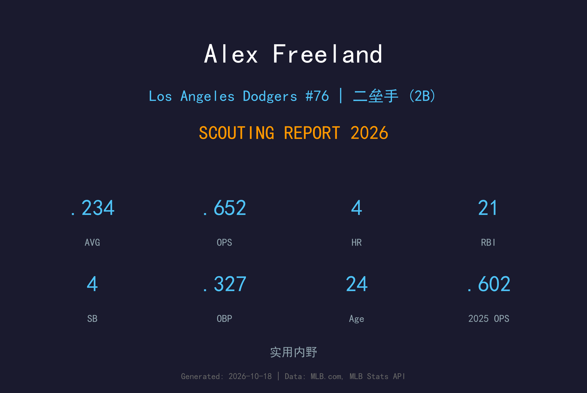
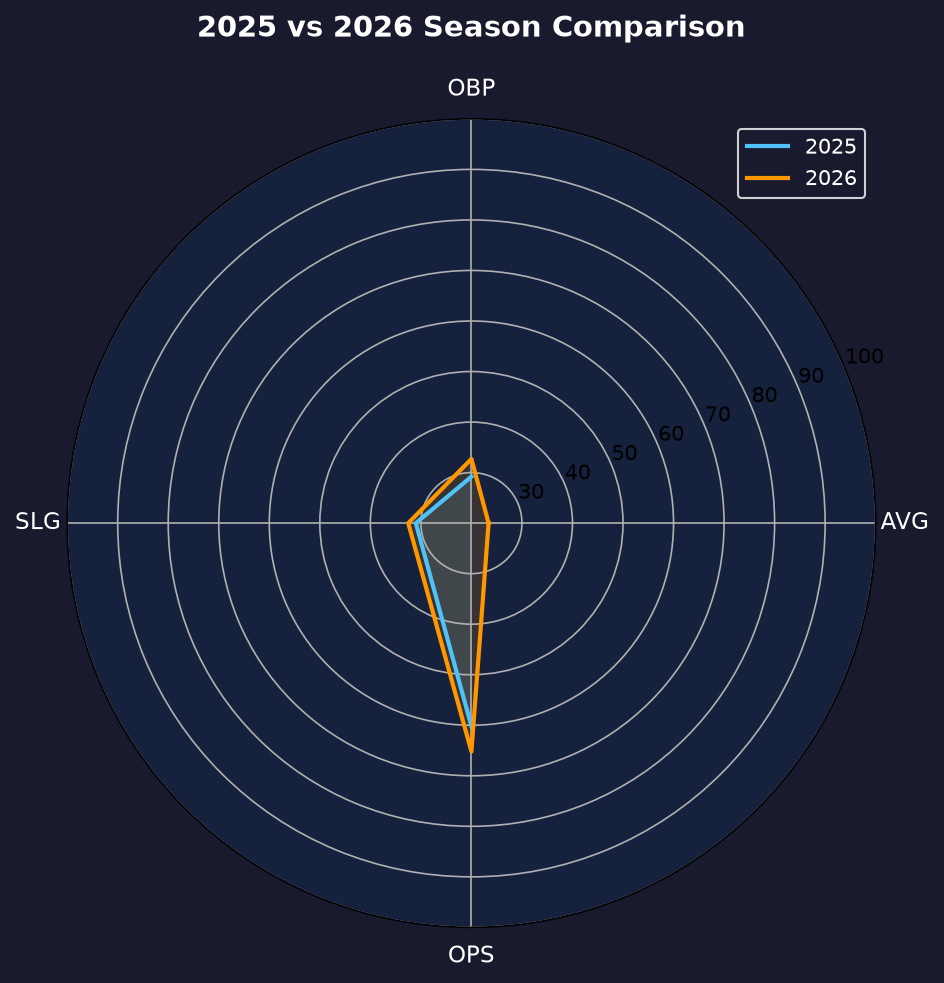
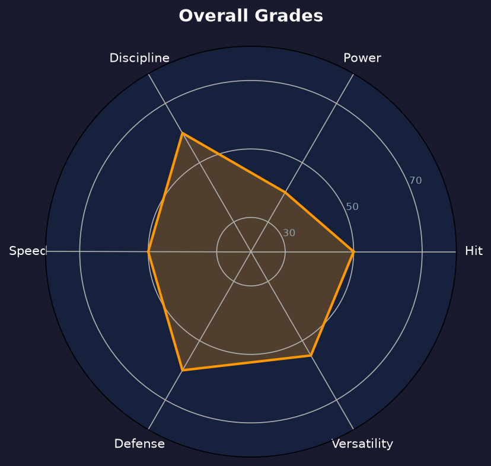

Los Angeles Dodgers #43 | 内野手（2B/SS） | 左右开弓 | 新人年站稳内野

Alex Freeland 是道奇自家培养的左右开弓内野手，2026年5月27日上调后成功站稳大联盟，出赛89场缴出 .234/.327/.325、4轰21打点的成绩单。他的价值不在数据耀眼，而在于"哪里需要补哪里"的内野万金油属性。
32次保送对74次三振（BB/SO 0.43）的选球纪律，加上 .323 的 BABIP 显示他的打击有真实基础而非纯运气。他最大的成长空间在长打：.325 的 SLG 与 57.75 打数/轰的速率都说明力量尚未开发。
24岁的 Freeland 正处在"证明自己是未来主力还是优秀替补"的分水岭。2027年他的目标是把 OPS 推上 .700，并争取更多二垒与游击的先发机会。
29 场初体验，.190 的打击率虽不起眼，但完成了从农场到大联盟的第一步。
二度上调后再未回头，89 场出赛覆盖二垒、游击、三垒多个位置，成为内野轮换的重要拼图。

| 赛季 | G | AVG | OBP | SLG | OPS | HR | RBI | BB | SO |
|---|---|---|---|---|---|---|---|---|---|
| 2025 | 29 | .190 | .292 | .310 | .602 | 2 | 6 | 11 | 35 |
| 2026 | 89 | .234 | .327 | .325 | .652 | 4 | 21 | 32 | 74 |
四项率值全面提升，保送率从 11.3% 升至 11.9%——第二年适应期的标准成长曲线。
.327 OBP 对 .234 AVG 的 93 点差距，是道奇打线里数一数二的"选球型"差距。32 次保送让他在打击低迷时依然能为球队制造进攻机会，这也是教练团愿意让他常驻打线的核心理由。
.325 SLG 仅比 AVG 高 91 点，全垒打率 57.75 打数/轰。左右开弓的他在哪边都没有稳定拉出长打的能力，这限制了他从"轮换拼图"升级为"常规主力"的可能性。 offseason 的力量训练与击球仰角调整是他的必修课。
作为内野深度被召唤，却用 89 场出赛回敬了球队的信任。他在二垒与游击的守备灵活性，让道奇在 Edman/Rojas 轮休与伤病期间保持了内野运转。这是一个"超额完成任务"的新人完整赛季。

选球吃饭的内野万金油，长打决定上限
B 级 / 内野轮换拼图
Alex Freeland 的2027赛季目标是坐稳内野第一替补，并把 OPS 推向 .700。道奇内野竞争激烈（Edman、Rojas、Muncy 都在轮换中），但他的左右开弓与多位置属性是天然的 roster 粘合剂。
2026：5/27 上调 → 89 场 .652 OPS、多位置守备
2027：目标 100+ 场、OPS ≥ .700、10+ 轰
2028+：若长打开发成功，可竞争主力二垒/工具人升级
Alex Freeland 出生于佛罗里达州 Maitland，在 Central Florida 大学（UCF）打出名声后，2021 年 MLB 选秀第 3 轮被洛杉矶道奇选中。他的左右开弓打者在选秀市场上本就稀缺，道奇看中的是他"每天都能排进打线"的工具属性。
农场生涯一路稳扎稳打，2025 年他完成大联盟首秀，29 场的初体验虽然打击率只有 .190，但保送倾向已经显现。2026 年 5 月 27 日他再度被上调，这一次他抓住了机会——89 场出赛、覆盖内野三个位置，用选球与守备证明自己是值得信任的大联盟球员。
场外的 Freeland 以勤奋与学习能力强著称，教练组评价他"每天都在进步"。在道奇这个星光熠熠的更衣室里，他是最安静但最可靠的那类球员。